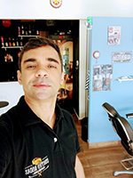

Sobre Nós
Barbearia:
A Quatro Rodas Barbearia é a materialização de um sonho. Fundada em dezembro de 2016, com uma decoração contemporânea, somada a conforto intimista.
Ambiente climatizado, monitoramento interno, wi-fi, smart TV e nosso bar com uma carta que conta com as mais variadas cervejas e também bebidas não alcoólicas para que nossos amigos e clientes tenham uma experiência única.
Barbeiro:
Sou Fábio Lessa cria de Bangu - Rio de Janeiro. Me formei pelo Senac unidade Copacabana no ano de 2016.
Sempre sonhei em empreender e vi na estética masculina a oportunidade perfeita para concretizar.
Além de nascido no bairro de Bangu, sou morador. Percebi a necessidade da região em receber um conceito sofisticado e acolhedor somados a técnica, de tratamento capilar e barba, aprimorada ao longo dos anos de experiência criando assim a fórmula perfeita para uma parceria duradoura com nossos amigos e clientes, regada a uma ótima conversa.
Galeria
Especialidades

Nós possuímos serviços clássicos de barbearia.

Utilizamos produtos qualificados para cuidado do cabelo e barba, que podem ser adquiridos por nossos clientes e visitantes

Nossa barbearia conta com bebidas diversas alcoólicas ou não para elevar o nível da experiência.